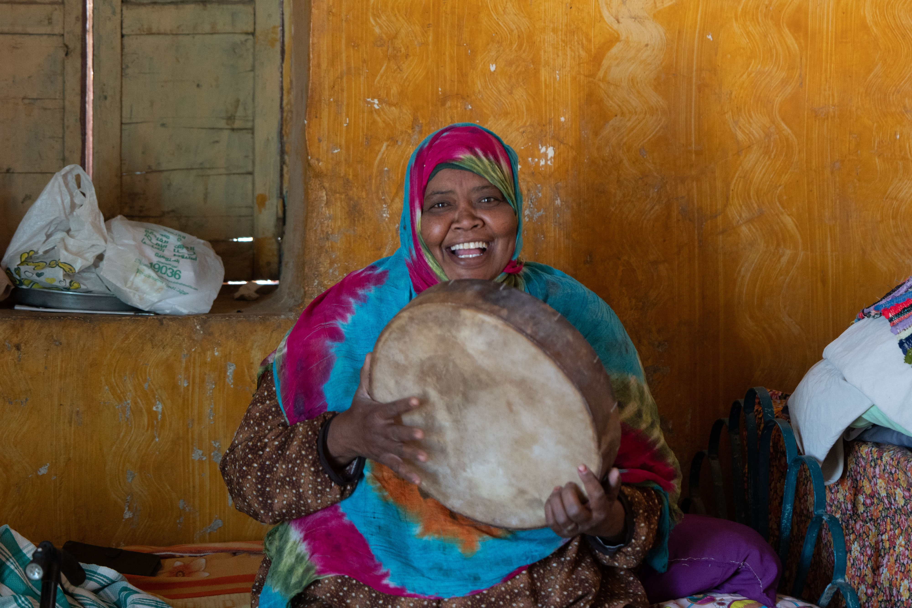
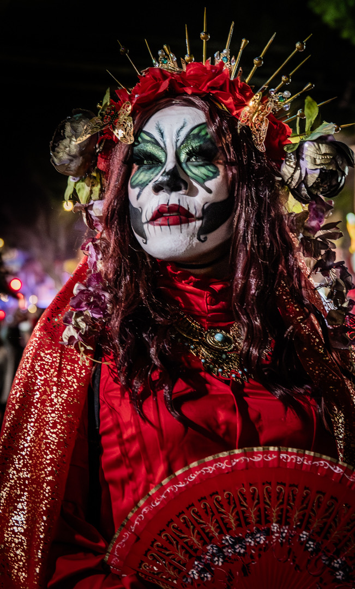
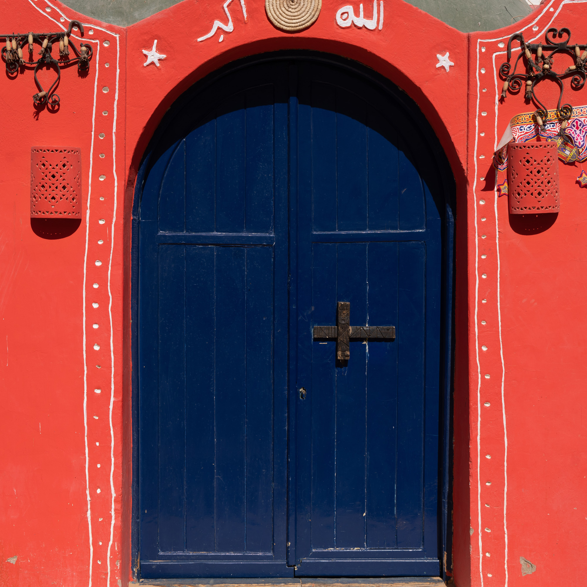

Menlo Park, CA presents the 2025–26 season
Zoe Wacker.
Photographer, cellist, map nerd. A highlight reel of experiments, adventures and “aha!” moments.
On location in Egypt · Chile · London · Rome · Paris
Now showing · recent dates
Admit one



The programme
Photo awards 2025–26

Honorable Mention, Six Fifty Peninsula Photo Contest 2025. Exhibited at the Palo Alto Art Center.
Read the story →- ITravel Photographer of the Year 2025Young TPOTY (14 & under) Runner-Up. Places collection exhibited internationally in 2026.→
- IISix Fifty Peninsula Photo Contest 2025Honorable Mention, Youth “Moments” — “Cinderello”→
- IIINational Photography Competition for KidsWinner, “Home is Where the Heart Is” (Dec 2025, Visionary Voyager). Winner, “Life in Red” (Mar 2026, Dream Snapper). Notable Entries Nov 2025 & Jun 2026.→
- IVNo Frames International Youth Photo Contest 2026Honorable Mention, under-14 Nature. 13 photos accepted.→
- VGlobal Peace Photo Award 2026Shortlisted, Children’s Peace Image of the Year — “Faces of Peace”→
On location
Travel dates

Music
“Concerts are my favorite because you don’t just hear the music — you feel it in your chest.”
Music makes everything in my day feel more colorful.
From the crowd
- Outside Lands2026
- Ariana Grande2026
- Molly Tuttle2025
- Billie Eilish2025
- Laufey2025 / 24
- Sabrina Carpenter2024
On stage · Cello
Played with the school orchestra on Main Street at Disneyland, May 2026.

Meet the headliner
Hi! I’m Zoe.
A middle schooler who’s always juggling a bunch of different interests. I started this site to keep track of the things I’m working on, the ideas I’m excited about, and the projects that don’t always fit neatly into a school folder.